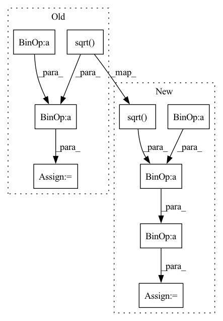

Pattern ID :13776

Before Change
/ beta_prod_t_sqrt
* eta
)
coeff_2 = ((1 - alpha_prod_t_prev) - coeff_1**2).sqrt()
// model forward
with torch.no_grad():
noise_residual = self.unet(image, train_step)
// predict mean of prev image
pred_mean = alpha_prod_t_rsqrt * (image - beta_prod_t_sqrt * noise_residual)
pred_mean = torch.clamp(pred_mean, -1, 1)
pred_mean = (1 / alpha_prod_t_prev_rsqrt) * pred_mean + coeff_2 * noise_residual
// if eta > 0.0 add noise. Note eta = 1.0 essentially corresponds to DDPM
if eta > 0.0:
After Change
// Third: Compute variance: "sigma_t(η)" -> see formula (16)
// σ_t = sqrt((1 − α_t−1)/(1 − α_t)) * sqrt(1 − α_t/α_t−1)
std_dev_t = (beta_prod_t_prev / beta_prod_t).sqrt() * (1 - alpha_prod_t / alpha_prod_t_prev).sqrt()
std_dev_t = eta * std_dev_t
// Fourth: Compute "direction pointing to x_t" of formula (12) from https://arxiv.org/pdf/2010.02502.pdf
pred_image_direction = (1 - alpha_prod_t_prev - std_dev_t**2).sqrt() * pred_noise_t
In pattern: SUPERPATTERN
Frequency: 3
Non-data size: 9
Instances
Fragment ID: 46022591
Project Name: huggingface/diffusers
Commit Name: 8841d0d1a9e63bda03e36c072d9d3d0692f07be4
Time: 2022-06-09
Author: patrick.v.platen@gmail.com
File Name: models/vision/ddim/modeling_ddim.py
M Class Name: DDIM
N Class Name: DDIM
M Method Name: __call__(6)
N Method Name: __call__(6)
M Parent Class: DiffusionPipeline
N Parent Class: DiffusionPipeline
M File Name: models/vision/ddim/modeling_ddim.py
N File Name: models/vision/ddim/modeling_ddim.py
M Start Line: 37
M End Line: 80
N Start Line: 34
N End Line: 99
'>
Before Change
for i in range(predictions.shape[0]):
// sum_x = torch.sum(predictions[i]-torch.mean(predictions[i]))
// sum_y = torch.sum(targets[i]-torch.mean(targets[i]))
sum_xy = torch.sum((predictions[i]-torch.mean(predictions[i])) * (targets[i]-torch.mean(targets[i])))
pow_x = torch.sum(torch.pow(predictions[i]-torch.mean(predictions[i]), 2))
pow_y = torch.sum(torch.pow(targets[i]-torch.mean(targets[i]), 2))
pearson = (sum_xy / torch.sqrt(pow_x * pow_y) + eps).float()
rst += pearson
rst = rst / predictions.shape[0]
return rst
After Change
sum_x2 = torch.sum(torch.pow(predictions[i], 2)) // x^2
sum_y2 = torch.sum(torch.pow(targets[i], 2)) // y^2
N = predictions.shape[1]
pearson = (N * sum_xy - sum_x * sum_y) / (
torch.sqrt((N * sum_x2 - torch.pow(sum_x, 2)) * (N * sum_y2 - torch.pow(sum_y, 2)))) + eps
if torch.isnan(pearson):
print("pearson is nan")
print("N :", N, "sum_xy :", sum_xy, "sum_x :", sum_x, "sum_y :", sum_y, "sum_x2 :", sum_x2, "sum_y2 :", sum_y2)
pearson = 0
rst += 1 - pearson
// n = predictions.shape[0]
// sum_x = torch.sum(predictions, dim=1)
// sum_y = torch.sum(targets, dim=1)
'>
Fragment ID: 46022460
Project Name: tvs-ai/pytorch_rppgs
Commit Name: 79fa5ea2fc22ff76197fc5272382574b54608880
Time: 2023-01-02
Author: forownsake@gmail.com
File Name: vid2bp/nets/loss/loss.py
M Class Name: AnonimousClass
N Class Name: AnonimousClass
M Method Name: Neg_Pearson_Loss(2)
N Method Name: Neg_Pearson_Loss(2)
M Parent Class:
N Parent Class:
M File Name: vid2bp/nets/loss/loss.py
N File Name: vid2bp/nets/loss/loss.py
M Start Line: 114
M End Line: 173
N Start Line: 114
N End Line: 191
'>
Before Change
exp_avg_sq = state.get("exp_avg_sq", torch.zeros_like(vector))
beta2 = param_group["betas"][1]
eps = param_group["eps"]
denom = torch.add(
torch.sqrt(torch.mean(beta2 * exp_avg_sq)), eps
) / math.sqrt(1 - beta2**step)
outputs.append(vector / denom)
After Change
scale = (1 - beta1) * beta2 * exp_avg_sq_old - beta1 * (
1 - beta2
) * last_grad * exp_avg_old
scale /= (torch.sqrt(exp_avg_sq) + eps) ** 3
out = vector * scale * param_group["lr"]
outputs.append(out)
'>
Fragment ID: 46022535
Project Name: leopard-ai/betty
Commit Name: 831b8d6a8444a2c09aae0a7d37bb280b7b52ca55
Time: 2023-04-06
Author: sangkeuc@andrew.cmu.edu
File Name: betty/hypergradient/utils.py
M Class Name: AnonimousClass
N Class Name: AnonimousClass
M Method Name: precondition(2)
N Method Name: precondition(2)
M Parent Class:
N Parent Class:
M File Name: betty/hypergradient/utils.py
N File Name: betty/hypergradient/utils.py
M Start Line: 22
M End Line: 34
N Start Line: 21
N End Line: 41